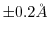

This command builds Cartesian coordinates of the MODEL.
If initialize_xyz is True, all coordinates are built. Otherwise only the undefined coordinates are built. The latter is useful because some coordinates may be undefined after the model.read() or model.transfer_xyz() command. The undefined coordinates have a value ofwhen written to a PDB file.
If build_method is 'INTERNAL_COORDINATES', the Cartesian coordinates are built from the ideal values of the internal coordinates as obtained from the IC entries in the residue topology library. If an appropriate IC entry does not exist, the ideal value of the internal coordinate is calculated from the corresponding energy term in the parameter library. If some coordinates still cannot be built, they are set to values close to those of the neighboring atoms. If even this fails, they are set randomly.
If build_method is '3D_INTERPOLATION', the Cartesian coordinates are built by linearly interpolating between the two defined atoms that span the contiguous undefined segment of atoms. In this mode, both the mainchain and sidechain conformations of all inserted residues are random and distorted. This build-up mode is useful because it may eliminate a knot and minimize the extended nature of the insertion obtained by build_method = 'INTERNAL_COORDINATES'. In the end, the coordinates of each of the interpolated atoms are slightly randomized (  ) to prevent numerical problems with colinear angles and colinear dihedral angles. If one or both of the spanning atoms are undefined, the 'ONE_STICK' option (below) is used.
If build_method is 'ONE_STICK', the Cartesian coordinates are built by ``growing'' them linearly out of the N-terminal spanning atom (C-terminal atom for the undefined N-terminal), away from the gravity center of all the defined atoms. If there are no spanning atoms, the spanning atom is defined randomly.
If build_method is 'TWO_STICKS', the loop is broken into two equal pieces and the 'ONE_STICK' algorithm is applied to both halves of the loop separately.
# Example for: model.build() # This will build a model for a given sequence in an extended conformation. from modeller import * env = environ() env.io.atom_files_directory = ['../atom_files'] env.libs.topology.read(file='$(LIB)/top_heav.lib') env.libs.parameters.read(file='$(LIB)/par.lib') # Read the sequence from a file (does not have to be part of an alignment): aln = alignment(env, file='toxin.ali', align_codes='1fas') # Calculate its molecular topology: mdl = model(env) mdl.generate_topology(aln['1fas']) # Calculate its Cartesian coordinates using internal coordinates and # parameters if necessary: mdl.build(initialize_xyz=True, build_method='INTERNAL_COORDINATES') # Add PDB remarks for readability mdl.remark = """REMARK 4 Extended-chain model of 1fas REMARK 4 Built from internal coordinates only""" # Write the coordinates to a PDB file: mdl.write(file='1fas.ini')